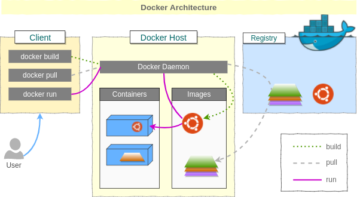
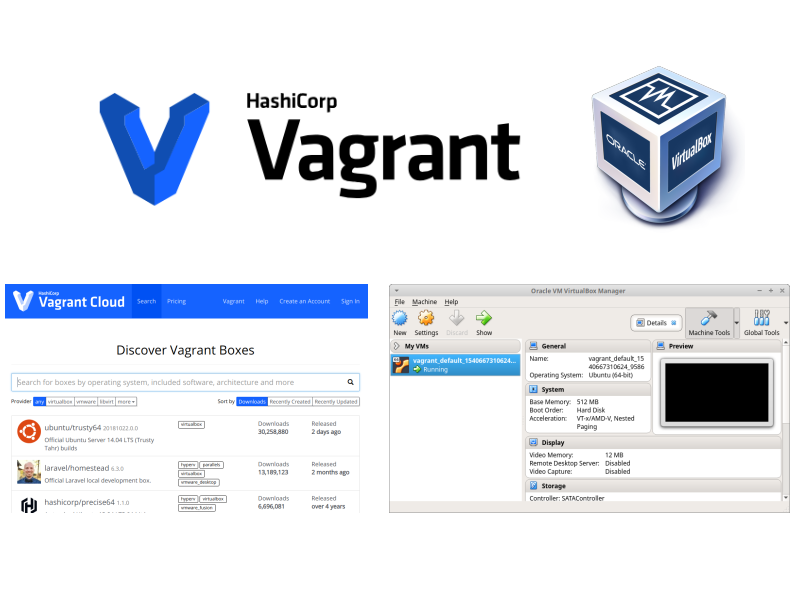
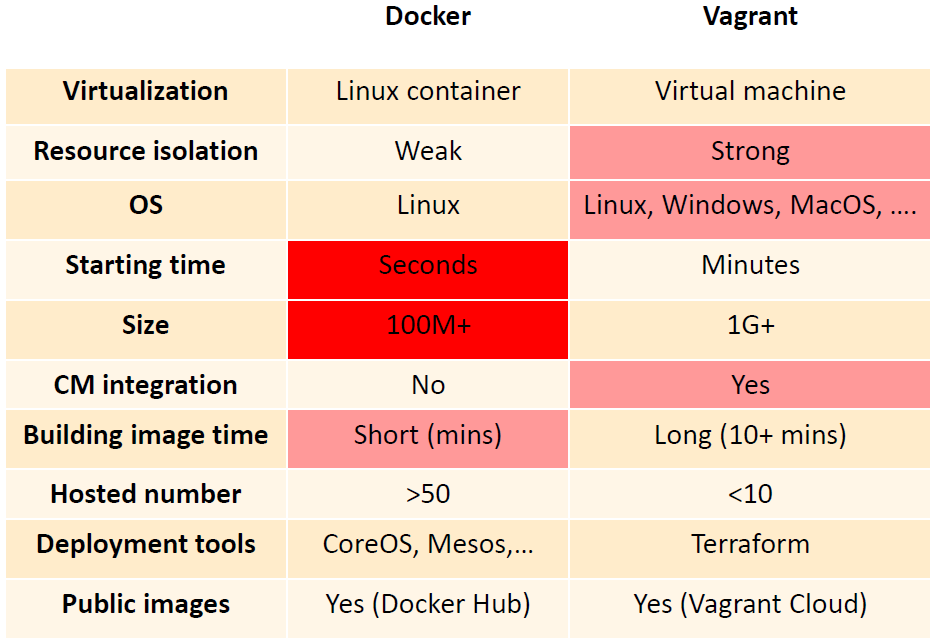

Pierwsze spotkanie, czyli ...
Plany + Wprowadzenie do Dockera
O mnie
- programista webowy JS
- członek teamu tworzącego 'Dzieje Khorinis'
- współtwórca kompilatora Daedalus do gry Gothic
- pasjonat automatyzacji
Plany
- Podstawy Docker'a
- Zaawansowany Docker + Docker Compose (coś więcej niż podstawy :-))
- Docker Swarm - wstęp do orkiestracji
- Kubernates - Podstawy
- Mikroserwisy
- CI/CD na podstawie Github Actions/CircleCI
- ... inne
Czekamy na Ciebie!
- jeżeli ktoś czuje się na siłach to zapraszam do prezentowania :-)
Dlaczego powstał Docker?
Wcześniej:
- DevOps musiał znać dobrze różne technologie
- U mnie działa!
- Nowy dev spędzał dzień na stawianiu apki
- Na serwerze produkcyjnym musiał być git :-(
Czym jest Docker?
Vagrant - popularny do 2015
Vagrant vs Docker
Co możn uruchomić na Dockerz'e?

Praktyka - Redis
Klient poprosił nas o stworzenie aplikacji w NodeJS która będzie łączyła się z Redisem (usługa służącą do cachowania). Za każdym razem będzie ona inkrementowła wartość klucza o nazwie 'test'. Redis powinien działać na dockerze
Praktyka - Nginx
Dr. Żabka poprosił nas o postawienie jego statycznej strony www za pomocą serwera nginx. Nginx powinien działać na dockerze.
Praktyka - Własny Dockerfile
Klient poprosił nas o przerobienie aplikacji nr. 1 by z poziomu aplikacji www dało się zmieniać stan klucza 'test' w redisies
Praktyka - Mongo
Klient poprosił nas o postawienie instancji bazy mongo. Nie może on być dostępna na żadnym porcie maszyny hostowej. Dostęp do bazy powinien być możliwy tylko z poziomu klienta webowego. Baza powinna mieć nazwę "produkcja", powinna zawierać dwie kolekcje: users oraz media.
Praktyka - NodeJS 2 wersje
Klient poprisił nas o stworzenie kontenerów gdzie będą na każdym 2 inne wersje. Na jednym wersja 12, na innym 4
Extra Praktyka - Postgres SQL
Klient poprosił nas o instancję postgresa która będzie używała wolumina. Dzięki temu po restarcie kontenera klient nie straci danych.
Zadania do realizacji
- Postaw instancję mysql
- Zaloguj się do kontenera i stwórz instancję bazy
- Spróbuj połączyć się do kontenera za pomocą Mysql Workbench
- Stwórz Dockerfile z webową aplikacją hello world w Twoim ulubionym języku
Problemy?
Jeżeli macie problemy z zadaniami lub chcecie by ktoś na nie spojrzał proszę o tworzenie postów na grupie n FB lub proszę o kontakt priv na FB.